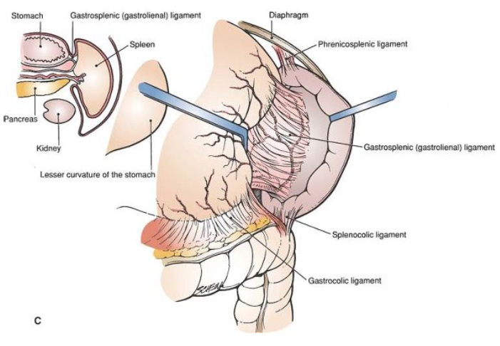
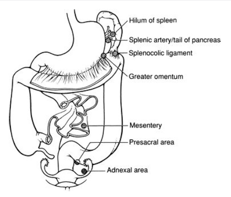

Solid organ lying in the left upper quadrant.
It is not a part of the alimentary tract, but drains to the
portal system.
Imperial rule of 1,3,5,7,9,11: (averages, does vary considerably)
-
size 1x3x5in (11cm in longest
axis; 22cm = massive splenomegaly)
-
weight 7oz (150g)
- lies between 9th & 11th ribs (along axis of 10th rib)
Lies in the LUQ, in peritoneum of original
left leaf of dorsal mesogastrium; splits this into its two
ligaments.
Lies posteriorly with convexity against diaphragm, concavity related to stomach, tail of pancreas, L kidney.
- lower pole doesn’t extend beyond midaxillary line in health; not usually palpable.
-
below its lower pole phrenocolic
ligament attaches splenic flexure to diaphragm
- pushes splenic flexure ahead when enlarging, hence dull to
percussion unlike a kidney mass which has air over it.
All of its surfaces are invested in visceral peritoneum; leaves of greater omentum pass from its hilum to greater curve of stomach as the gastrosplenic ligament
- this is
very short, often only 1cm; careful control of stomach GC
necessary when mobilising this or can be damaged.
- and backwards to the front of the left kidney as the lienorenal
ligament.
These are usually bloodless, except in portal hypertension.

- must at least double in size before its anterior border becomes palpable; has a notch.
Impressions
gastric: lies between hilum and notched anterior
border;
concave renal:
lies behind hilum;
colic: inferiorly.
5% of CO
Splenic
artery: runs along upper border
of pancreas, gives off dorsal pancreatic artery and 2-10
unnamed branches to pancreas and great pancreatic a.
- In 2/3, a
branch arises from midpoint running up behind peritoneum to
post. aspect of stomach, = posterior gastric artery.
Terminates as smaller branches to spleen, left gastroepiploic and short gastrics (x3-4); passes through the lienorenal ligament at the hilum; gives 2-3 branches, which form >5 more then enters spleen.
- hence spleen has segmental supply; upper & lower polar segments, and 1-5 central segments
- artery dividing near spleen = magistral pattern (30%), earlier division = distributing splenic pattern (70%) (important in splenic conservation)
Splenic vein: confluence of 2-6 tributaries in splenorenal ligament. Receives L gastroepiploic vein; upper/lower polar branches may drain well beyond hilum. (290)
- is valveless
- meets superior mesenteric behind the neck of the pancreas portal vein.
Lymph: nodes at hilum --> pancreaticosplenic nodes --> coeliac nodes (299)
Nerves: coeliac plexus (sympathetic only)
Begins in 6th week as mesodermal condensation in the dorsal mesogastrium & divides that structure into lienorenal and gastrosplenic ligaments.
Comes to lie at L margin of lesser sac
intra-abdominally; unlike the pancreas (which also develops in
the dorsal mesogastrium)
Spleen forms from fusion of foetal splenules.
- the splenic notch is due to incomplete fusion
- splenunculus
(accessory spleens) due
to failure of fusion (20% population, rarely larger than 2cm).
- these lie along the course of development: splenic artery,
hilum, lienorenal and gastrosplenic ligaments, but also
mesentery, in pelvis (female gonads), testicles; though most
found close to spleen.

Clinical Points
1. Search for and remove accessory spleens in above locatios during splenectomy for haematologic reasons.
- found in 10-30%; typically only 1; can be
multiple; us <3cm
- apart from above, also reported in liver
and pancreas.
2. Magistral pattern recognition important in splenic
conservation.
3. For elective splenectomy, open gastrocolic
omentum, isolate splenic artery and dissect with care, quit
friable.
- then splenic vein laterally.
- in massive splenomegaly, ned to eembolizing aretry first
- in lap, either dissect hilar first then
mobilize; or didvide posteriro leaf first; dpends on surgeon
preference.